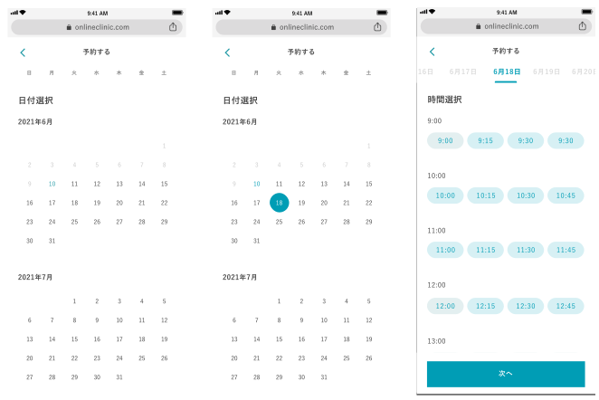
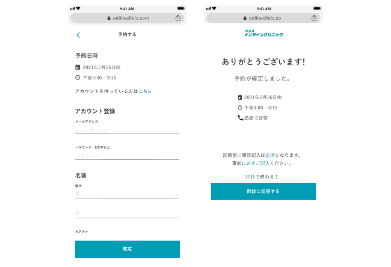
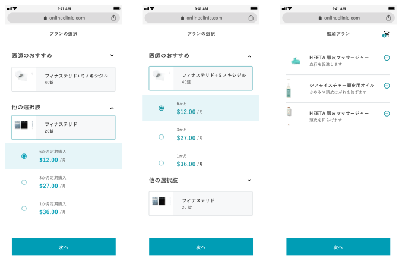

Online Clinic
Role
UX Designer
Timeline
Jun 2021 - Jul 2021
Tools
Figma
The Challenge
I worked with a design agency based out of Japan that works with Japanese clients who have needs for websites of apps. This particular project is called Online Clinic which aims to supply the japanese market with Androgenetic Alopecia medicine. According to the clients, Japanese men tend to have too much shame to enter a brick and mortar clinic so this solution is meant to help penetrate this untapped market.
BACKGROUND
The client had come to our agency which is an already established clinic equipped with men’s health doctors as well as assistants who can help with scheduling. The ask here is to have an online experience that can help process new patients by booking a time and having the patients fill out an intake form for the clinic’s record.
We had a couple of sessions with the patients to pinpoint that to collect all the necessary data to fulfill an order the client would have to:
- Signup from the already established landing page
- Have the patient choose a time for the consultation
- Answer patient questionnaire questions
- Consultation with an assigned doctor
EXECUTION
My goal here is to take these requirements and create a minimal flow to help users subscribe to this men's medicine perscription model. One aspect of this subscription onboarding flow is the likelihood that the user might drop off the flow due to reasons like too many clicks or confusing interactions. By making the the UX is tight we can insure the user finishes the onboarding process which will lead to sales.
- Choosing a Date & Time
We wanted to keep this very simple for the user and keep thing interaction at 2 clicks for a happy path. After the user chooses a date the time page will appear prompting the user to choose a 15 min time slot before they can proceed. From the appointment time page the user can still change the date if they did not do so correctly on the previous page.
- Contact Information
From here we want the user to add their contact information including the method of communication the doctor would use to reach out to them. Once they enter this information we would then have the user acknowledge that all the information is correct before they wait for an email for their incoming doctor's consultation appointment.
- Questionnaire
From here we want the user to add their contact information including the method of communication the doctor would use to reach out to them. Once they enter this information we would then have the user acknowledge that all the information is correct before they wait for an email for their incoming doctor's consultation appointment. Once again the challenge here is the minimize the the amount of friction the user would have to face which would include extra numbers of clicks necessary to finish this questionnaire.
Once the user has successfully filled out the questionnaire we inform them that they would be recieving an email with a link so they can purchase the medication package that was reffered by the doctor.

- Choosing a Medication
Finally once the user gets their email invitation to choose a medication they will click on the link to take them back to an experience where they can choose an approved medication subsciption that the doctor has issued. In this example the user can choose a male pattern baldness medication for
CONCLUSION
In conclusion, the team built this experience to help the client have on online sales funnel for prospective clients. Today the experience can be viewed using Japanese VPN. This has just gone live but has already driven sales to their clinic. I still do support this project to help streamline the experience hoping to increase sales and reduce dropoff now that we have baseline metrics.